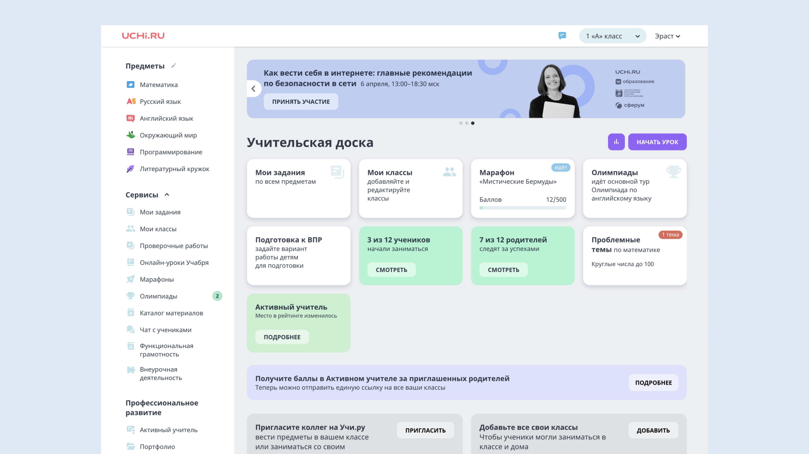
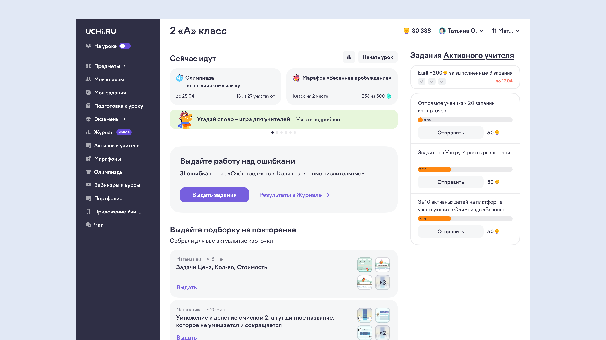
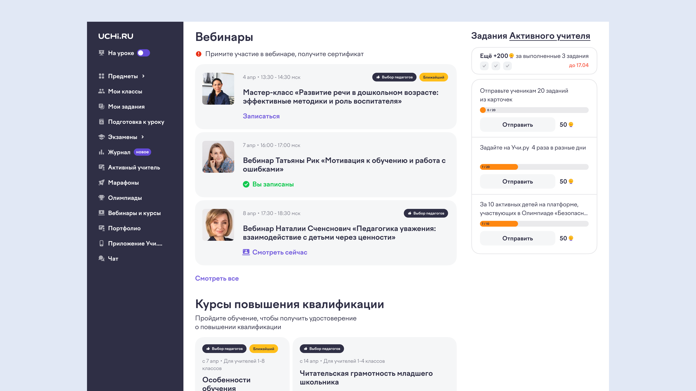
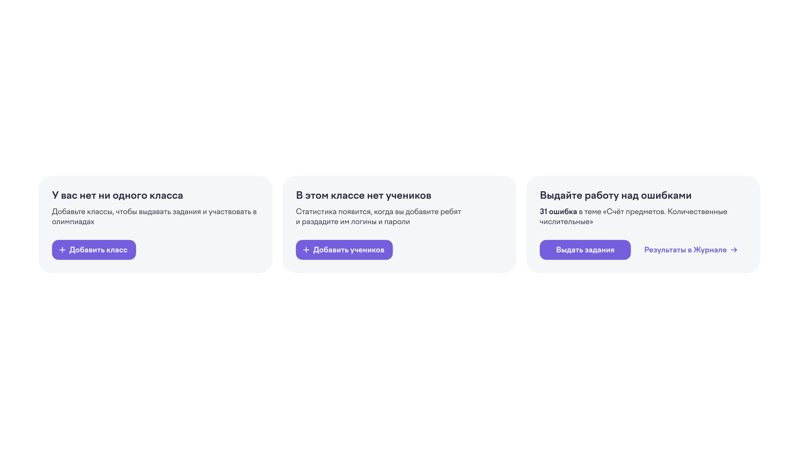
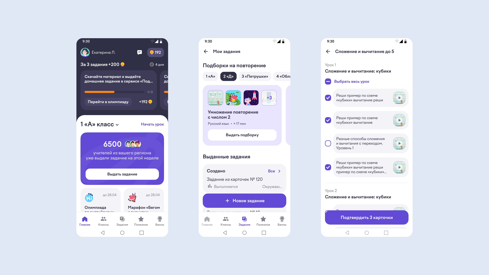

ЛК учителя рос органически — без единой UX-стратегии. Каждая команда добавляла свои разделы и виджеты. Учителя не могли найти нужные инструменты, новые функции не повышали вовлечённость.
С точки зрения UX задача — создать масштабируемую архитектуру сервисов и разводящей страницы, а не набор разрозненных блоков и баннеров, как было раньше.
Ключевые бизнес-метрики: рост конверсии в выдачу домашних заданий и рост активности учителей.
Были выделены четыре ключевые проблемы в UX и дизайне текущего продукта. Для каждой сформулирована гипотеза решения.

До редизайна
Проблема: виджеты на доске дублируют меню слева, не несут дополнительной ценной информации.
Гипотеза: раскрыть ключевые виджеты и дать учителю более быстрый и простой путь к полезным действиям.
Проблема: длинные пути к действиям при переходе по разделам (сайдбар → раздел → подраздел).
Гипотеза: сократить количество элементов навигации, выстроить её по CJM учителя.
Проблема: нет приоритетов и понятной системы триггеров и наград.
Гипотеза: создать динамическую систему заданий, визуально собранную в одном месте.
Проблема: актуальные события (марафон, олимпиада, викторина) перемешаны с остальным контентом.
Гипотеза: вынести отдельным блоком то, что идёт активно сейчас.

После редизайна

После редизайна

Примеры того, как менялся ключевой CTA блок на новой главной, в зависимости от сценария пользователя

Мобильное приложение, в редизайне которого мы впоследствии использовали похожие принципы